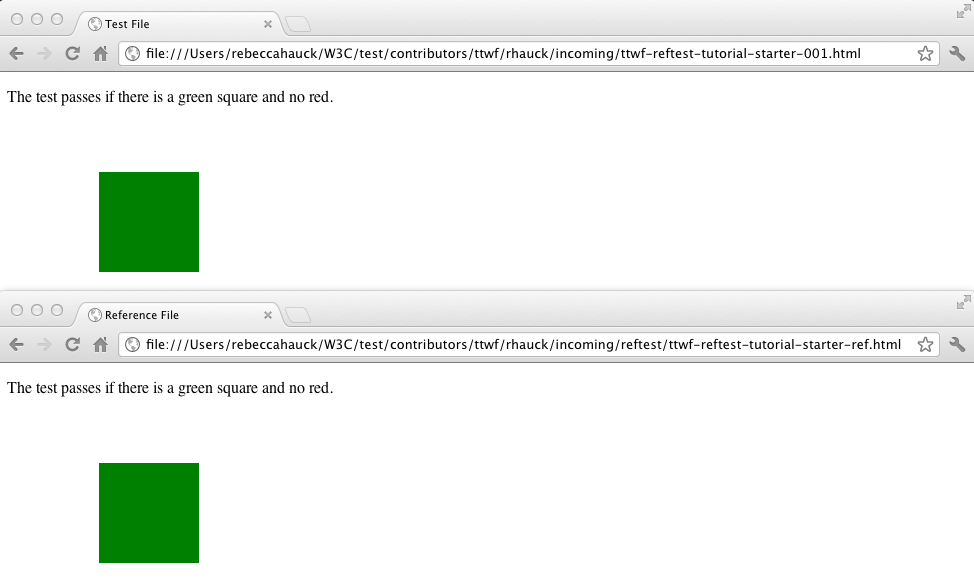

W3C Test Writing Tutorials
Setup
Complete all steps before proceeding
- Step 1: Create a CSSWG Test Manager Account
https://test.csswg.org/shepherd/register/- Select the check box next to "Request Repository Write Access"
- Step 2: Install Mercurial
http://wiki.csswg.org/tools/hg/install - Step 3: Setup Mercurial Preferences
http://wiki.csswg.org/tools/hg#setting-up-mercurial-preferences - Step 4: Clone the CSSWG Test Suite Repository
http://wiki.csswg.org/tools/hg#initial-clone-of-the-central-repository - Step 5: Clone the Resources directory
http://wiki.csswg.org/tools/hg#initial-clone-of-the-central-repository
Reftest Overview
- Two files: Test file + Reference file
- Test file uses the feature you're test
- Reference file is an exact visual match without using the feature you're testing'
- Self-describing (works both manually and with automation)
- Cross-browser & cross-platform
Directory structure
- CSSWG Test Repository
- test
- contributors
- ttwf
- your_csswg_id
- incoming
- submitted

Sample Test Case
Basic test for the transform property described in the CSS3 Transforms spec using the translate() function
Spec Links:
http://dev.w3.org/csswg/css3-transforms/#transform-property
http://dev.w3.org/csswg/css3-transforms/#two-d-transform-functions

Step 1 - OSX
Press down-arrow for Windows instructions
Update your local CSSWG test repository
Complete this step unless you just cloned the repository in the previous step
From a terminal window, type the following:
$ cd [path to repo]/test
$ hg pull -u
$ ls -lR contributors/ttwf/samples
Note: These files can also be downloaded from here:
ttwf-reftest-tutorial-starter.zip
Step 1 - Windows
Press up-arrow for OSX instructions
Update your local CSSWG test repository
Complete this step unless you just cloned the repository in the previous step
From a DOS command window, type the following:
> cd [path to repo]\test
> hg pull -u
> dir contributors\ttwf\samples
Note: These files can also be downloaded from here:
ttwf-reftest-tutorial-starter.zip
Step 2 - OSX
Press down-arrow for Windows instructions
Create a directory for your new test
$ cd [path to repo]/test/contributors/ttwf/
$ mkdir -p yourName/incoming
$ cd yourName/incoming
Step 2 - Windows
Press up-arrow for OSX instructions
Create a directory for your new test
> cd [path to repo]\test\contributors\ttwf
> mkdir yourName\incoming
> cd yourName\incoming
Step 3 - OSX
Press down-arrow for Windows instructions
Copy the starter files to your incoming directory
From your incoming directory created in previous step
$ cp -R ../../samples/* .
Step 3 - Windows
Press up-arrow for OSX instructions
Copy the starter files to your incoming directory
From your incoming directory created in previous step
> xcopy /e ..\..\samples .
Step 4
Open the ttwf-reftest-starter-001.html file in a editor
<!DOCTYPE html>
<html>
<head>
<title>Test File</title>
<link rel="author" title="Your Name" href="mailto:youremail@address.com">
<link rel="help" href="http://www.w3.org/TR/css3-transforms/#transform-property">
<link rel="help" href="additional spec link">
<link rel="match" href="path to reference file">
<meta name="assert" content="Statement describing what the test case is asserting>
<style type="text/css">
/* Positioned container allows for the self-describing statement to still
be visible in the case of failure */
.container {
position: absolute;
}
.greenSquare {
position: absolute;
top: 0;
left: 0;
width: 100px;
height: 100px;
/* Add fil color green here */
/* Add CSS transform here */
}
/* This div should only be visible if the test fails */
.redSquare {
/* It is approximately the same size as the test div, but with a 1px margin */
position: absolute;
width: 98px;
height: 98px;
/* Add fill color red */
/* Add top and left to position the div so it is hidden behind the green square */
}
</style>
</head>
<body>
<p>The test passes if ...</p>
<div class="container">
<!-- This is the square that should not be visible if the test passes -->
<div class="redSquare"></div>
<!-- This is the square being tested with the transform -->
<div class="greenSquare"></div>
</div>
</body>
</html>
Step 5.1
Add the test metadata
Title & Author
Note: Each metadata element is described in detail on the CSSWG Wiki
http://wiki.csswg.org/test/format#template-details
Step 5.2
Add the test metadata
Path to reference file
Note: Each metadata element is described in detail on the CSSWG Wiki
http://wiki.csswg.org/test/format#template-details
Step 5.3
Add the test metadata
Spec links
Note: Each metadata element is described in detail on the CSSWG Wiki
http://wiki.csswg.org/test/format#template-details
Step 6
Add the transform property to the test element
Step 7
Create an element that is visible only upon failure
Step 8
Add green & red fill colors to denote passing & failing conditions
Step 9
Add a statement to the test page to make this a self-describing test
Step 10
Open the reftests/ttwf-reftest-tutorial-starter-ref.html file in an editor
<!DOCTYPE html>
<html>
<head>
<title>Reference File</title>
<link rel="author" title="Your Name" href="mailto:youremail@address.com">
<style type="text/css">
.container {
position: absolute;
}
.greenSquare {
position: absolute;
width: 100px;
height: 100px;
/* Position the div so its identical to the div in the test file */
/* Add fill color to match the test file */
}
</style>
</head>
<body>
<p>The test passes if...</p>
<div class="container">
<div class="greenSquare"></div>
</div>
</body>
</html>
Step 11
Add the reference metadata
Title & Author
Step 12
Position and fill the reference element so it matches the test file exactly in a passing condition
Step 13
Add the self-describing statement here, too
Step 14
Examine your test and reference files in the browser and confirm they are identical
Failing test example

Step 15 - OSX
Press the down-arrow for Windows instructions
Add your new test & reference file to the repository
$ cd [path to repo]/test/contributors/ttwf/yourName/incoming
$ hg add ttwf-reftest-tutorial-001.html
$ hg add reftest
$ hg commit -m "TTWF reftest tutorial"
$ hg push
Note: If you receive the following error:
abort: push creates new remote head ...
Your local repository is out of sync with the test repository
Do the following to resolve the issue:
$ hg pull -u
$ hg merge
$ hg commit -m "Merge"
$ hg push
Step 15 - Windows
Press the up-arrow for OSX instructions
Add your new test & reference file to the repository
> cd [path to repo]\test\contributors\ttwf\yourName\incoming
$ hg add ttwf-reftest-tutorial-001.html
$ hg add reftest
> hg commit -m "TTWF reftest tutorial"
> hg push
Note: If you receive the following error:
abort: push creates new remote head ...
Your local repository is out of sync with the test repository
Do the following to resolve the issue:
> hg pull -u
> hg merge
> hg commit -m "Merge"
> hg push
Step 16
Ask someone to review your test
Step 17 - OSX
Press down-arrow for Windows instructions
Incorporate feedback & move test to the submitted folder
$ cd [path to repo]/test/contributors/ttwf/yourName
$ hg pull -u
$ hg merge
$ hg commit -m "merging"
$ hg mv incoming/ttwf-reftest-tutorial-001.html submitted/ttwf-reftest-tutorial-001.html
$ hg mv incoming/reftest/ttwf-reftest-tutorial-ref.html submitted/reftest/ttwf-reftest-tutorial-ref.html
$ hg commit -m "moved the TTWF reftest tutorial to the submitted folder"
$ hg push
Step 17 - Windows
Press down-arrow for OSX instructions
Incorporate feedback & move test to the submitted folder
> cd [path to repo]\test\contributors\ttwf\yourName
> hg pull -u
> hg merge
> hg commit -m "merging"
> hg mv incoming\ttwf-reftest-tutorial-001.html submitted\ttwf-reftest-tutorial-001.html
> hg mv incoming\reftest/ttwf-reftest-tutorial-ref.html submitted\reftest\ttwf-reftest-tutorial-ref.html
> hg commit -m "moved the TTWF reftest tutorial to the submitted folder"
> hg push
W3C JavaScript Test Tutorial
JavaScript Test Overview
- In most cases, JavaScript is the preferred method for writing tests
- JavaScript tests have some advantages over Ref Tests
- Robust
- Flexible
- Performant
- Powerful
- W3C provides a framework (testharness) to simplify and standardize test creation
- Includes an API for making common test assertions
- Formats results and displays debug information for failures
- JavaScript tests are best when used in conjunction with some number of Ref Tests that verify final rendering
Sample Test Case
Basic test for the transform property described in the CSS3 Transforms spec using the translate() function
Same as Ref Test example
Spec Links:
http://dev.w3.org/csswg/css3-transforms/#transform-property
http://dev.w3.org/csswg/css3-transforms/#two-d-transform-functions
Step 1
A JavaScript starter file was copied during Setup
Open the ttwf-js-tutorial-001.html file in an editor

Step 2
Review metadata
- Most items have been completed in the starter file
- Update the author metadata to include your name and email address
- Note the following differences from the Ref Test metadata:
- Additional flag was used: "dom"
- No match metadata is required - only needed for Ref Tests
Step 3
Import the W3C JavaScript Test Harness files
Add the following lines to the starter file above the style block
<script src="/resources/testharness.js"></script>
<script src="/resources/testharnessreport.js">></script>
Note: The path to the resources directory should match its location on your local machine
The path to these scripts must be updated to match the above before pushing to the test repo
Step 4
Add a div element with id="log" for test results
<body>
...
<div id="log"></div>
</body>
testharness will add an HTML table that contains a row for the test results from each test case in the file to this element
Step 5
Set margins and padding to 0px
<style>
* {
margin: 0px;
padding: 0px;
}
</style>
This is not required, but simplifies the code
Step 6
Create a script block that will contain the JavaScript
<body>
...
<script>
</script>
</body>
Test file should now appear as follows:

Step 7
Create a function inside the script block that will return the x,y position of an element
<script>
function checkElementPosition(elemID) {
return document.getElementById(elemID).getBoundingClientRect().top +
"," + document.getElementById(elemID).getBoundingClientRect().left;
}
</script>
The test function
- Documented and implemented in testharness.js
- Function signature: test(test_function, name, properties)
- Used to define an individual test case in a file
- Multiple calls to test() are common in a single file
- The function argument must be a function object, not a function call
- The return value of the function object passed to test() (argument 1) determines Pass/Fail
- The assert methods in testharness.js are typically used as the function supplied to test(), but can also be user defined
- The name passed to test() (argument 2) should a be descriptive test name that conveys what is being tested
- Name will be displayed in the test results table
- Properties (argument 3) is an object that overrides default test properties
- timeout is the only currently recognized property
Step 8
Add a call to the test function to your script block
test(test_function, name, properties)
<script>
...
test(function, "Test CSS transform translate on a div");
</script>
No need to specify properties in this case
testharness.js assert methods
- testharness.js provides a number of assert methods to use for testing
- Full list is provided in the comment section of the testharness.js file
- Whenever possible, these methods should be used
- All assert methods contain an optional "description" argument that is only output if the assertion fails
- The description will be added to the default output from testharness
- The description should be used to provide additional debug information in the case of a failure
- All asserts must be located in a test()
- asserts outside won't be detected correctly by the harness and may cause a file to stop testing
Step 9
Add assert_equals as the test_function for test()
assert_equals(actual, expected, description)
test(function() {assert_equals(checkElementPosition("myDiv"), "50,50",
"myDiv should be at 50,50")}, "Test transform translate on SVG rect");
Arguments used for assert_equals:
actual = assert_equals(checkElementPosition("myDiv")
expected = "50,50"
description = "myDiv should be at 50,50"
Final file

Passing test example

Failing test example

Step 10 - OSX
Press the down-arrow for Windows instructions
Add your new test file to the repository
$ cd [path to repo]/test/contributors/ttwf/yourName/incoming
$ hg add ttwf-js-tutorial-001.html
$ hg commit -m "TTWF JavaScript tutorial"
$ hg push
Note: If you receive the following error:
abort: push creates new remote head ...
Your local repository is out of sync with the test repository
Do the following to resolve the issue:
$ hg pull -u
$ hg merge
$ hg commit -m "Merge"
$ hg push
Step 10 - Windows
Press the up-arrow for OSX instructions
Add your new test file to the repository
> cd [path to repo]\test\contributors\ttwf\yourName\incoming
> hg add ttwf-js-tutorial-001.html
> hg commit -m "TTWF JavaScript tutorial"
> hg push
Note: If you receive the following error:
abort: push creates new remote head ...
Your local repository is out of sync with the test repository
Do the following to resolve the issue:
> hg pull -u
> hg merge
> hg commit -m "Merge"
> hg push
Step 11
Ask someone to review your test
Step 12 - OSX
Press down-arrow for Windows instructions
Incorporate feedback & move test to the submitted folder
$ cd [path to repo]/test/contributors/ttwf/yourName
$ hg mv incoming/ttwf-js-tutorial-001.html submitted/ttwf-js-tutorial-001.html
$ hg commit -m "moved the TTWF JavaScript tutorial to the submitted folder"
$ hg push
Step 12 - Windows
Press down-arrow for OSX instructions
Incorporate feedback & move test to the submitted folder
> cd [path to repo]\test\contributors\ttwf\yourName
> hg mv incoming\ttwf-js-tutorial-001.html submitted\ttwf-js-tutorial-001.html
> hg commit -m "moved the TTWF JavaScript tutorial to the submitted folder"
> hg push
Congratulations!
You have completed your first two W3C tests!
Reference Slides
Mercurial Command Reference
- Basic Commands:
- hg pull (gets the latest changes from the CSSWG Test repo)
- To update after pull, use: hg pull -u (alleviates need to do hg update)
- hg update (applies the latest changes pulled to your local repo)
- hg status (displays list of locally changed files)
- hg add (stages a new or modified local file for commit)
- hg remove (stages the removal of a local file for commit)
- hg merge (merges local changes with updates pulled from CSSWG Test repo)
- hg commit (commits local changes to local repository)
- To include commit message, use: hg commit -m "Commit message here"
- hg push (pushes local changes to the CSSWG Test repository)
- See next slide for typical usage scenarios
Mercurial Command Reference
- User wants to update their local repo to match the CSSWG Test repo:
- hg pull -u (pulls and applies latest changes from CSSWG repo to local repo)
- User makes local changes, wants to get them into CSSWG Test repo:
- hg status (check which files are stages for commit)
- hg add fileName (stages file for commit, repeat for each file)
- hg status (confirm all files are stages for commit)
- hg commit -m "Commit message here" (Commit to local repo)
- hg push (pushes locally committed changes to CSSWG Test repo)
- User attempts to push, gets error message "abort: push creates new remote head ..."
- hg pull (gets newest changes from CSSWG Test repo)
- hg merge (merges newest changes from CSSWG Test repo with local changes)
- hg commit -m "Merge" (commits the merge to local repo)
- hg push (pushes changes to CSSWG Test repo)